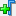
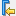
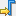
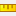

このウィンドウは、[Hardware ILA] ダッシュボードに表示されるデフォルトの 5 つのウィンドウの 1 つで、ILA デバッグ コアの選択したプローブの動作が表示されます。
[ILA Waveform] ウィンドウは 2 つの領域に分けられ、左側にプローブ名と値がリストされ、右側にハードウェア デバイスからキャプチャされたデータの波形が表示されます。右クリック メニューは、2 つの領域間で異なります。右のプローブ側のコマンドには、プローブ名および基数の管理、仮想バスの定義、分周器の追加といった表示されるデータを分類しやすくするものが含まれます。1 つのプローブを選択すると、[Edit Enumeration] コマンドを使用して、そのプローブの表示またはエクスポートされる値を定義し直すことができます。[Create User Defined Probe] を使用すると、複数のプローブを 1 つの新しい仮想プローブにまとめることもできます。右の波形側には、タイムラインを管理したり、マーカーを追加したり、別の遷移イベントにタイムラインを上下に移動したりするコマンドが含まれます。左側でオブジェクトを選択すると、右側の波形コマンドの一部が使用可能になります。
[ILA Waveform] ウィンドウには、ILA デバッグ コアや表示プローブのさまざまな側面を制御したり、表示された波形でタイムラインを確認するためのコマンドを含むツールバーがあります。ツールバーには、ILA デバッグコアと表示プローブを制御する次のコマンドが含まれます。
 |
Add probes | ILA デバッグ コアに関連するプローブがリストされた [Add Probes] ダイアログ ボックスが開きます。プローブを選択して [OK] をクリックすると、ウィンドウにそのプローブが追加されます。 |
 |
Remove selected probes | [ILA Waveform] ウィンドウから選択したプローブが削除されます。 |
| Toggle Auto-Retrigger | 自動再トリガーが有効になり、問題のないトリガー、キャプチャ、表示が完了した後に、ILA コアのトリガーが実行し直されます。 | |
| Run Trigger | コアのベーシックまたはアドバンス トリガー設定で定義されたトリガー イベントが選択した ILA コアで検出されるようになります。 | |
| Run Immediate | 選択した ILA コアがトリガー設定に関係なく即座にトリガーされるようになります。 | |
| Stop Trigger | 選択した ILA コアのトリガーが停止されます。 | |
 |
Export ILA Waveform Data | ILA コアでキャプチャされたデータを書き込み、[Waveform] ウィンドウで表示するための [Export ILA Data] ダイアログ ボックスが開きます。 |
次のコマンドを使用すると、表示された波形を確認、マーク、測定できます。
| Go to Cursor | 波形が拡大されている際に使用します。現在のカーソル位置を中心に表示されるようになります。 | |
| Go to Time 0 | 波形カーソルがキャプチャされたデータの開始地点に移動されます。 | |
| Go to Last Time | 波形カーソルがキャプチャされたデータの終了地点に移動されます。 | |
| Previous Transition | [ILA Waveform] ウィンドウ左でプローブを選択すると、現在の位置から選択したプローブの遷移よりも 1 つ前の地点に波形カーソルが移動されます。 | |
| Next Transition | [ILA Waveform] ウィンドウ左でプローブを選択すると、現在の位置から選択したプローブの次の遷移の地点に波形カーソルが移動されます。 | |
|  | Add Marker | 現在のカーソル位置にマーカーが挿入されます。 |
|  | Previous Marker | タイムラインに任意の数のマーカーが追加されている場合に、カーソルを現在の位置から前のマーカーの地点に移動します。 |
|  | Next Marker | タイムラインに任意の数のマーカーが追加されている場合に、カーソルを現在の位置から次のマーカーの地点に移動します。 |
| Swap Cursors | タイムラインに複数のカーソルが表示される場合に、カーソル間を切り替えます。 注: Ctrl キーを押しつつカーソルをクリックして選択し、マウスをドラッグすると、タイムラインに 2 つ目のカーソルを追加できます。詳細は、『Vivado Design Suite ユーザー ガイド : プログラムおよびデバッグ』 (UG908) のこのセクションを参照してください。
|
|
| Snap to Transition | カーソルを移動する際に、そのカーソルがタイムラインの一番近い遷移位置に置かれます。オフににすると、カーソルをタイムラインにそって自由に移動できるようになります。 | |
|  | Floating Ruler | タイムラインにカーソルが複数表示される場合に、波形表示の一番下のフロート ルーラーが表示/非表示になります。ルーラーは、イベント間の時間間隔を計るために使用できます。 |
ユーザーは、波形ウィンドウの表示内容を指定したり、波形の特定エリアを表示するのに必要な詳細レベルまで拡大したり、キャプチャされたデータの時間範囲を指定できます。ツールバー メニューには、[ILA Waveform] ウィンドウの表示を制御するための次のコマンドが含まれます。
 |
Options | 信号の基数を設定したり、信号名を切り捨てたりといった [ILA Waveform] ウィンドウの表示内容を設定するのに選択可能なオプションが表示されます。詳細は、『Vivado Design Suite ユーザー ガイド : プログラムおよびデバッグ』 (UG908) のこのセクションを参照してください。 |
 |
Zoom Fit | [ILA Waveform] ウィンドウのキャプチャされたデータすべてが表示されるように拡大されます。 |
 |
Zoom In | より小さなキャプチャ データの周期に表示が拡大され、信号波形と遷移イベントの詳細が表示されます。 |
 |
Zoom Out | 表示が縮小されて、より多くのキャプチャ データが表示されます。 |
[Waveform] ウィンドウは Vivado® IDE のワークスペースに表示されます。ワークスペースの詳細は、『Vivado Design Suite ユーザー ガイド : Vivado IDE の使用』 (UG893) のこのセクションを参照してください。
関連項目
| 『Vivado Design Suite ユーザー ガイド : プログラムおよびデバッグ』 (UG908) の「波形ビューアーを使用した ILA プローブ データの表示」 | |
| 『Vivado Design Suite Tcl コマンド リファレンス ガイド』 (UG835) の「display_hw_ila_data」 |